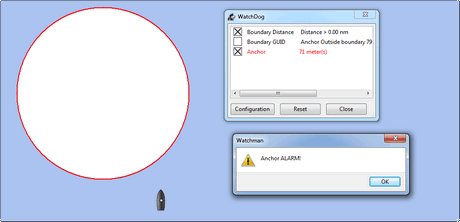
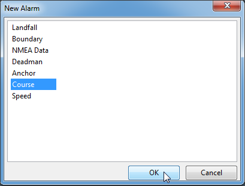

Plugin Documentation
OpenCPN Plug-in (pi) documentation
Some rough first ideas on the set-up for OpenCPN-plugin documentation (English version)
1. The documentation has to be logical and consistent.
I have tried to put myself in the mind-set of someone who knows nothing about OpenCPN-plugins (that was quite easy actually). And then I started asking myself some questions. The first question about the pi was: "What is it", the second "Why should I want it", the third "How do I install it" and so forth.
My conclusion was that I probably would appreciate a standard framework (for each pi the same framework). Maybe something like this:
-
What and Why
-
Install
-
Standard actions
-
Options
-
FAQ
Explanation:
-
What and Why
-
What does the pi do
-
Why can the pi be useful
-
-
Install
-
Where to get the pi
-
How to install the pi
-
-
Standard actions
What are basic (standard) actions you have to do to make the pi work Example: “how to set up a Watchdog Alarm”.
-
Options
What options are there after performing the standard actions
Examples: 1. Choice for a specific type of Watchdog Alarm (anchor, boundary, speed, course, deadman, NMEA etc.) 2. Choice for a specific type of alarm-signal (pop-up message, sound, command) 3. Setting various parameters (range in meters, degrees, time in seconds or minutes, speed etc.)
-
FAQ
This section is meant to deal with various questions that might arise when using the pi. Example:
(Why) Can(‘t) I …….. ? Answer: ……..
2. The documentation has to be easy to understand.
*The problem: The English language is spoken in many different parts of the world. And in different ways. I’m Dutch and (I think) I can write a bit of text in English. But what I presume to be a more or less correct usage of that language might be quite upsetting to a native English speaker. So: text can lead to miscommunication/misinterpretation. And to complicate things: OpenCPN’s default English is "US" English and therefore (I realize I’m not making friends in the USA now….) not quite "the real thing" either.
The proposed solution: *Visualise. That means: less text (not so easy for me) and more screenshots. Less text also means: don’t try to write "a lot of words" for things that are already obvious and don’t need further explanation.
*Example: We can write a whole story (equals "lots of words"…) about how to set up an anchor alarm, but another way to skin the cat is to visualize it by means of a series of screenshots. Like this:
Setting up an Anchor Alarm in Watchdog-plugin:
Step 1

Step 2

Step 3 
Step 4 Click Anchor and OK 
Step 5 Edit the alarm. Fill in and click OK. For explanation of the different items: see text a to h
-
Click Sync to Boat or enter Latitude and Longitude. Sync(ronize) to Boat = alarm is set for the position of the boat at the moment the alarm is enabled.*
-
Adjust Radius if 50 is too much or not enough. Radius = the distance in meters before the alarm is triggered.
-
Automatically synchronize to the boat whenever enabled Tick the tickbox if you want the alarm to be set for every new position of the boat at the moment the alarm is enabled again. Leave unticked is you want the alarm to remain relative to the position in step a.
-
Sound, Command, Message Box Choose one or more types of alarms.
-
Browse Choose sound-file to be played (only when "Sound" is ticked).
-
Repeat Alarm after .. seconds Adjust if 60 is too much or not enough.
-
Automatically reset Re-sets the Alarm automatically after you have responded to a alarm.
-
Graphics enabled Draws a circle around the boat, showing the radius.
-
Test To test the alarm
-
Information, OK and Cancel No further explanation necessary